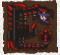
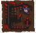

Windows Users Prep
For MHF to function fully you need to set your Timezone to Taiwan and your System Locale to Chinese Traditional (Taiwan). For this you have two options; actually changing your system settings or using Locale Emulator
System Settings
To change your timezone you simply need to right click on the clock on your desktop and choose Adjust date/time followed by Change Time Zone, you will simply want to change this to (UTC+08:00) Taipei, nothing else needs to be done here.
You can set your PC's locale to Taiwan by going into Region and Language in the control panel followed by Administrative and choosing Change System Locale... followed by Chinese (Traditional, Taiwan).
Both of the above should stop you ever encoutering actual issues with the game while mostly not affecting anything else.
If you frequently use out of region games that require a specific locale or you are constantly installing and uninstalling things where locale is used instead of system language you may way to use Locale Emulator below.
Locale Emulator
Locale Emulator is a tool that does exactly what it sounds like, it emulates the above settings without you having to actually change your PC settings.
First you will need to download the latest release of the softwareon github, after downloading it make a folder somewhere you are comfortable having it (e.g. C:\tools\LocaleEmulator\).
With all the files extracted start the file LEInstaller.exe and click Install for all users. This will prompt you for administrator rights which you will need to allow.
With the tool installed and the installer still open you will want to hit Edit global profile list and set Location to Chinese (Traditional, Taiwan), Timezone to (UTC+08:00) Taipei tick Run as an administrator and hit Save As ... choosing a logical name such as Run in Chinese.
With all of the above done you should just be able to find your install of MHF-Z and right click the shortcut or the game's exe file and choose Locale Emulator followed by Run in Chinese or whatever you set the option to.
While players have used this without being negatively affected by things such as Gameguard it may cause issues down the line. If you want to be 100% sure of not having issues from this tool; just change your locale and timezone instead.
Playstation Network
It is recommended you actively avoid PSN if at all possible for the end of MHF.
The PC version's English Patch actively modifies the game to enable you to obtain a huge number of things (event weapons, decorations, skills etc.) that are basically or literally impossible to obtain on the PSN version, this means that PSN version is a vastly inferior experience all around and should be avoided if you have any other option. Mild inconvenience while starting should be preferred to literally having swathes of content locked away.
If you are on PSN (Vita, PS3, PS4) rather than PC you should simply be able to make a new PSN in the Taiwan, Malaysia, Singapore or Hong Kong regions and search 'Frontier Z' in the PSN store and find the game. This will appear as either "魔物獵人FRONTIER Z (中文版)" or "Monster Hunter Frontier Z (Chinese Ver.)" depending on settings.
I have no guide beyond this but fields for signing up inside the game itself are Username, Email, Password and Password (Again).
You need to be on the regional account in order to pay for subscriptions, so don't download it then start it on a normal region account. PS Plus is not required to play online. Cheapest region has historically been Malaysia.
Signing Up
Playstation Network players need to sign up in game! This is for PC based accounts only.
Signing up is a very simple process, visit the Main Site and then click the register link below the login button:
After clicking the register button you will be taken to a page to enter a username, E-mail and password.
After clicking continue you will be taken to a page asking if you want to make a full account, click the upper button and you're done (steps past 2 are optional).
Installation
Download and Install
After signing up you need to download the game, you can either grab it from Capcom TW directly or from a Google Drive mirror.
After it is finished simply launch the installer and install as you would any other application.
Set your System Locale to a Traditional Chinese variant or use Locale Emulator or you will be unable to play with all players and will fail to receive messages from other players and the server!
Seriously do it. I don't mention it multiple times for no reason. Don't be a lazy piece of shit.
System Locale can be changed by going into Region and Language in the Control Panel, clicking the Administrative tab followed by the Change system locale button. Any Chinese Locale will allow you to receieve all server messages and play with all players.
It's safe to simply leave locale as Chinese after changing it once and it shouldn't affect anything else much if at all.
Don't be an idiot who thinks "Oh it's working despite this giant block of text! It'll work until it stops you connecting to someone and then you'll have to actually fix it when you were trying to play the game.
Launching the Game
Set your System Locale to Chinese or use Locale Emulator or you will face issues in game!
Applocale is not sufficient!
This is in the section multiple times to reinforce that you are stupid if you don't do it!
Launcher
Change your timezone to (UTC+08:00) Taipei whenever you want to log into the game, being in any other timezone will cause logging in to fail, this is true even with Locale set. A quick guide can be found here.
Although the launcher is branded Frontier Z now it is completely unchanged mechanically, it's just green now.


Launcher Configuration
If you hit 'configure settings' you will get a bunch of extra settings


Generally speaking you will only need to use the options above once, all other settings will then be configured in game. The final tab on the configuration window are Proxy Settings which you can completely ignore as they will be useless to everyone 99.9% of the time.
On first launch you will obviously not have a character yet, pressing launch will prompt you to accept logging in with your newly assigned ID instead.
Main Menu
Upon starting the game proper you will be put onto a menu with four options that are as follows:
Quick Start - Automatically selects a server for you
Choose Server - Allows you to pick a server to join and view which servers friends are on
Options
Quit
Character Creation
Character Creation will take place after choosing either to choose a server or to quick start:

The options are in English and each section has a master selection option with filters for individual sub-types (e.g. dark skin, long hair, light skin etc.). Select randomises your character and right stick or K and ; rotates your character.
After making your character visually you will be prompted to choose what weapon type you will have equipped. This is simply what you have equipped when you first start and can be changed later. As with mainline all characters start with basic versions of each weapon in their box..
Introduction
Please Note:
You start with an HR5 weapon and in general HR1 through HR4 is very easy compared to the rest of the game and ultimately mostly serves as a basic tutorial.
The content ramps up somewhat harshly at HR5 onwards. The various urgent quests are also scaled down to be easily soloable.
You can simply make a new weapon from scratch and disable NPCS (see menus section) if you want to pad out the earliest stages of the game for whatever reason.
After creation you will have to confirm through the various news posts and will either be deposited in a server or choose one depending on which start option you chose. If you have to choose the only tabs you will have immediately available will be the First and Fifth ones. These are standard low rank servers and a special set of newbie ones respectively.
After you log in to a server fully you will see an animation of your character walking into town and be greeted by an instructor NPC.
Mash through what the instructor has to say, it's nothing important. After you're done mashing you will have a message telling you about the Hunter Guide, this is functionally both a set of achievements and a basic progression guide to the game.
Pressing confirm will take you into the actual guide menus, you will have access to the HR Tasks (HR程度) and Other Tasks (其他). Access the HR section by hitting confirm on it (E, Left Click or Right Face Button on a controller) and you will see two tabs of tasks.
Within the first tab hit Z or Left Face Button on a controller to view details on the tasks, this will automatically complete five of them and allow you to claim a basic set of starter items (potions, meat, whetstones) for your first few quests. Do the same in the second tab and the Other section to claim some items that will be useful down the line.
After going through the Guide you will get a couple pop ups, just hit back or confirm until they all go away and you will find yourself left where the endless string of prompts started.
Before you start playing properly you should go into options and change a few things to preference. You can change the controller type to match modern console MH games instead of the PS2 series by accessing 選項 > 操作 > 按鍵設定
You can also turn off the controls overlay that is pretty useless due to being chinese, the mouse controls direction indicator and extend the HP bar to full scren width by going into Options (選項) followed by Display Options (Quests，General) (顯示（任務，共通)).
Direction Arrow (顯示行進方向箭頭), Controls Guide (操作導覽表示) should be toggled off while HP Display (計量表顯示類型) can be either Fixed Length (固定) or Stretched (可變) depending on which you prefer.
Tutorial Quest
There's a chance that upon interacting with the instructor you ended up on a Gogomoa quest. First you will need to skip through the various text prompts as they pop up (simply press whatever is cancel) and select 'No' when a prompt comes up.
After the prompt use the Blue Box. From this grab the coin and deliver it to the Red Box. This will allow you to exit to the north and actually kill the Gogomoa which will trigger the end of the quest.
After killing the Gogomoa you will get a standard quest end screen allowing you to take rewards, followed by a list of how much HRP you gained, monster stats etc.
NPC Chatter
You may also want to go into options (選項) followed by Chat Options (聊天) and simply disable all of the options from the bottom up to disable the NPCs shouting at you in chat and making sound effects while doing so:

Hunter Rank 1
Basics
You start with weapons designed to push you to the end of the trial as fast as physically possible, while the weapons are not hugely powerful in terms of frontier (very early HR5 weapons) they are notably stronger than the basic ones you can craft.
If you are only familiar with world, the game has some old school limits in place the most notable of which are only being able to equip things in your house or the blacksmith, not being able to combine after signing quests and no restocking or changing of equipment on quests. This means in general you have a higher level of commitment to things and should think before leaving on a quest.
Town Primer
The town layout is pretty simple and straight forward, a map with the key locations pointed out is below. This includes areas referred to later so you may wish to open it in another window to look at it later.
This is obviously rough and purposefully off scale, it should be sufficient for anyone wanting to play the game to at least find all key points and NPCs.
Starting
If you want to extend HR1-4 for some reason you can craft a weapon from scratch and go about learning how to gather etcetera, you can find information on how to do this in the Items and Materials section, keep in mind this locating of materials will be entirely on you and there will be no associated hand-holding.
This is not generally recommended unless you are trying to pretend the game is Free to Play. Every single monster found within the first four Hunter Rank bands is available at HR5 and gear basically starts over as it does in High Rank in other games at this point. You will also unlock three of the four weapon styles for every weapon for hitting HR5, this coupled with the higher level of challenge in general will be a much better experience.
Regardless of which route you've chosen to go with weapons you can now start your HR1 key quests. Go and talk to the guild girl in black at the middle counters in the town square, she will potentially prompt you to go back into the Hunter Guide which you can just ignore and you can simply keep talking to her until you get an actual quest menu.
Within this menu you will want to select 獵人任務（提升HR) > ★1. Key quests are blatantly sorted first with a very obvious star icon on them.
In quests you will be shouted at a bunch by the instructor NPC which generates whistling sounds even if you toggled messages off, he'll stop being in your quests after you hit HR2 and you won't hear it again. He's trying his best but you don't speak Chinese.
After you complete the three keys a very obvious Urgent Quest section will appear: 獵人任務（提升HR) > 緊急任務 and you can complete it to progress to HR2.
Hunter Guide Tasks
Hunter Guide tasks function in the same way as most modern achievement systems do, they provide a set of items in exchange for the completion of a specific task. Most of these tasks are relatively simple and most of them are worth doing.
The Hunter Guide tasks window can be brought up in town by hitting either Shift + C on keyboard or R1 + R2 on a controller, the challenges are broken down into sections that are ordered based on progression.
You should access all the sections you can and hit Square or Z on Keyboard to view detailed information followed by your normal confirmation button. This will claim a bunch of tasks which are just 'Read This' giving you a boost of free items including cheques used below.
Hunter Rank 2
Zeny and Box Space
With your urgent complete you will automatically move up to HR2 upon returning to town. You will also be greeted by the instructor who will upgrade your house allowing you to get a partner and give you a stack of GCP tickets.
At this point you should access one of the boxes and sell around 150 of the Cheques the game threw at you from Hunter Guide, this can be done by choosing Sell from box and then Items 出售持有物 > 道具 and then choosing the Yellow Ticket named 波爾多卡牌櫻 and selling around 150 of them. This will put you at 7.5 million and let you buy all the things and upgrades you need going forward.
Don't worry about selling so many items, they exist only to be sold and you will get hundreds more from the Hunter's Guide tasks across HR1-7
After getting money you should go to the Shop NPC (Pink Guildie) to buy Power and Armour Charms and Box Upgrades.
| Section 1 基本(回復道具等) |
|---|
| Powercharm, 36,000z (力量之護符) | Armor Charm, 24,000z (守護之護符) |
| Section 2 書籍（調合書等） |
|---|
| Book of Storage 1, 1,500z (收納高手·技之書) | Book of Storage 2, 5,000z (收納高手·力之書) |
If you want to go more in depth with items you could also buy stacks of things like Potions etc. in section 1 but this will be covered properly at HR5 as you shouldn't really need much until then.
Caravan Gem
The Caravan Area or Pallone is located next to the town entrance, you should enter this area and obtain your Caravan Gem as soon as possible after hitting HR2.
This can be done by simply entering the Caravan area and talking to Kashira, the woman near the Bonfire. After talking to her you will have a new icon next to your name of a random colour, this is your Caravan Gem.
This gem adds a new option to your equipment box under 變更裝備 > 裝上獵人珠技能, initially this will only have Recovery Items Up (醫療術) which you should equip when you get a chance, this increases the power of Potions and Mega Potions to 1.10x their original healing amounts.
Partners
At this point you should get a partner. To get one, enter the bar on the stairs of the town.
After entering talk to the waiter NPC in blue at the counter.
This will enable contracted NPCs to accompany you on quests and allow you to start on your own Human NPC companion. To get a partner you simply need to talk to the Legendary Rasta with the weapon type you want them to use. Tonfa and Swaxe will need to be unlocked separately at G Rank later. If you're not sure what weapon one of the Legendaries are using interact with them and choose the second option to see their gear.
The best choices in terms of AI and actual DPS are Dual Swords or Sword and Shield. Great Sword is also not too bad but the other available choices have AI that is pretty stupid and will spend more time doing nothing than attacking monsters.
On talking to the NPC with the weapon type you want you should simply choose 伙伴 which will prompt you to start the Partner creation process. First, you will be prompted to select a gender:
And then a personality type (Male on left, Female on right):
You will then need to confirm your decisions. Gender cannot be changed without paying real money for restyle points or recreating the Partner. Name and Personality can be changed with specific rare items. Personality only dictates what manner of speech your partner has and will not really matter too much.
After going through these options you will need to head to your House where you will be greeted by the NPC you talked to in order to choose their weapon and you will be able to customise them in the same way you created your character originally.
If you mess up something while creating your partner you can cancel them by talking to the cat next to the bar, this will completely delete your partner and allow you to start over changing name, gender and personality. If you simply want to customise face or voice you can also use Premium Restyle Points from the Item Shop (costs real money).
Partners have a lot more to them than mentioned here but you can pretty much ignore it all until you hit G Rank unless you are intending to spend a lot of time at HR5. When you hit G Rank check the House and AI Companions > AI Companions > Partners.
Felyne Partnyaas
Partnyaas are Felyne companions similar to those found in MHFU and MHP3rd. They can be managed in the same area as Halks are (ho to your house, and choose the Heart Icon) area. To hire a Partnyaa you simply need to talk to the Halk and My Support Manager (the only human in the zone) and choose his Partnyaa option, this will put you into Airou Creation mode:
There are five tabs for this which let you customise aspects of your partnyaa, they are:
Pattern (花紋類型), Eyes (眼睛類型), Ears (耳朵類型), Fur Colour (毛色類型) and Tail (尾巴類型)
After confirming your choice of visuals you will be asked to name your Partnyaa and they will appear on the island over the bridge. You can have 1-2 Partnyaas initially (2 if you are in a Guild, 1 if you are not.) and gain the option to get more when one is at Rank 300
There is more information in the House & AI Companions section covering Partnyaas. If you want to ensure the fastest clearing of initial quests you may want to go into options (選項) followed by NPC Options (NPC同行設定) and move your Partnyaa (伙伴喵) to lowest priority to stop them coming on quests and replacing a normal NPC.
HR2 Quests
The HR2 keys are pretty straightforward, the only notable thing is that in the Rathian hunt you will want to head to Area 6 and wait as Area 10 is inaccessible to hunters at night in the jungle.
Hunter Rank 3
House and Transcend
At this point you can buy a second house expansion in the books section (重建高手·錢之技) of the Pink NPC's Store, this will further expand your box capacity. You will also unlock the Transcend System; a customisable time based buff that allows you to augment your hunter's abilities. Similar to Wystones in 4U transcend appears as a usable item with your other consumables, unlike the wystone however the Transcend state starts with little charge and has to be powered up over time on quests.
Transcend starts as a slight increase to elemental and raw damage and gets fairly powerful over the course of the game. Full details are in the dedicated Transcendsection.
Lunchboxes & Newbie Guild
You can join a newbie guild as the game wants you to at this point, simply talk to the guild manager and answer positive to all his prompts and he will railroad you into joining a guild.
After you do so you can enter the guild hall next to him and buy several useful food items that will allow you to get +50 health and +25/+50 stamina on every quest.
| Section 1 基本(回復道具等) |
|---|
| Spirit Mushrooms, 980z (鬼松茸) | Frost Tomatoes, 450z (霜降蕃茄) | Pugi Crackers, 10z (豬仙貝) |
As an alternative to this you can also apply to the English Guild, but that will not guarantee automatic acceptance so you may have to wait until someone gets on with permission to accept your join request. However, you can simply join the newbie guild and immediately leave after buying food without issue and then apply to the real guild.
Lunchboxes (or Bentos) are buff providing meals that you set to go alongside your quest when you post it, there are a number of foods you can buy with many combinations.
You can pack a Bento at the appropiate NPC, this is the dedicated food store in town or the caravan area and the Guild Store Cat in the Guild Hall.
After you have made any single meal it will be added to a quick list by default, you can instantly prepare any meal on this list by hitting X on a controller of Z on keyboard while posting a quest!
The meal will be remembered between quests so as long as you choose the correct food the first time you won't need to choose again unless seasons change!
The most basic of meals and where to get the ingredients is in the table below, you can see more in the Quests section if you care to later
| Standard Combinations |
Warm Season
溫暖期 |
Fist Rice 拳頭米
Demon Mushrooms 鬼松茸 |
+50 HP / +50 Stamina |
Cold Season
寒冷期 |
Fist Rice 拳頭米
Frost Tomatoes 霜降番茄 |
+50 HP / +50 Stamina |
Breeding Season
繁殖期 |
Fist Rice 拳頭米
Power Lard 力量豬油
|
+50 HP / +25 Stamina |
| Food Types and Locations |
| Guild Cat Store |
Spirit Mushrooms, 980z (鬼松茸)
Frost Tomatoes, 450z (霜降蕃茄) |
| Lunchbox NPC |
Fist Rice, 275z (拳頭米)
Power Lard, 200zz (力量豬油)
|
HR3 Quests
The actual quests at HR3 are pretty simple. This is technically High Rank by the old rating system so you will no longer have supplies and will spawn at random spots in any quests that support it. The Urgent is the Elder Dragon Rukodiora who uses Magnetism, this allows him to manipulate your hunter's position while you are inflicted with the status effect Magnetised.
Hunter Rank 4
Pugi Farm
Hunter Rank 4 allows you to star the process of getting a Pugi, to do this simply choose to enter your Pugi Farm from the house door at next to the shops (pig icon). Inside you should talk to the NPC in front of you; she will ask a series of questions which will assign a farm manager out of the three below. Follow the table if you have some preference on their visuals.
| Answers | Manager Assigned |
| NYY | Random |
| YYN | Youngest |
| YYY | Middle |
| YNY | Eldest |
After the questions you will need to wait until 00:00 TW time to progress further, as such this isn't detailed here and should be perused in the House and AI Companions > House Facilities > Pugi Farm section of this site when relevant to you.
Item Presets
Item Presets are pretty simple, simply set up your character's active inventory to be exactly what you want to register as a preset, access any box and choose the Item Presets (道具組合) option followed by Register Preset (登錄道具組合) and then choose a slot to register to and optionally name it.
Slots 1 through 4 correspond to pressing L1/L2/R1/R2 or F/Ctrl/C/Shift while interacting with a box. This means after a quest if you simply run up to a box, interact, and press L1 or F you will instantly equip your prset from Slot 1.
If you are subscribed you will have an extra 20 preset slots which you can access by going into Item Presets (道具組合) option followed by Equip Preset (呼叫道具組合) slots 5 through 24 do not have keyboard or controller shortcuts and must be manually equipped.
HR4 Quests
The HR4 Key Quests are pretty standard fare while the Urgent is against Akura Vashimu who uses the Frontier exclusive Crystallisation Status Effect
.

Crystallisation coats you in crystals that instantly reduces your stamina bar back down to 25 and explode after a short duration dealing damage to you and anyone around you. These crystals can be shattered by mashing and waggling analogs or by taking a hit from another hunter. NPC companions will automatically try and break you out of crystals if they manage to avoid being under the status themselves.
Hunter Rank 5
HR5 is where the game functionally starts and can be seen as a similar step up to that of reaching High Rank in the Mainline titles. All Frontier exclusives added in recent years are HR5 or higher meaning there is a lot of variety if you want to linger here before progression to G Rank.
You can find a guide to subbing in the Subscribing & Paid Things Section, after subbing you can either restart or choose 使用權情報的更新 on the NPC in purple by the town entrance (use the map above).
Weapon Styles
HR5 unlocks Style Rank and allows you to get new Styles for your weapon as well as to fight Hardcore versions of monsters, the vast majority of these are substantial changes beyond what you'd normally see in even Sub or Rare species of monsters and are definitely worth experiencing.
After hitting HR5 you can simply approach the Guild Master to begin your Style Ranks. You will automatically interact with her after talking to her which will grant you SR and automatically enable it.
To enable the new movesets use any large box which allows you to change gear (such as the one in the Blacksmith) and go into the section where you would normally choose equipment followed by the newly added final option.
變更裝備 > 裝備秘傳書
This will bring you to a new menu where you should select your weapon type, followed by the second option and then your preferred style.
Weapon > 型態 > Style
At HR5 you will have Heaven Style (天之型) and Storm Style (嵐之型) while at this rank the best style for most weapons is Storm Style with some variation. You can swap the style at any time and are not locked to any of the three initially available.
| Weapon Styles Rough Ratings |
|---|
| Weapon | Earth | Heaven | Storm |
| Sword and Shield | Good | Good | Good |
| Dual Swords | Decent | Good | Good |
| Great Sword | Decent | Bad | Good |
| Long Sword | Decent | Good | Usable |
| Hammer | Decent | Bad | Good |
| Hunting Horn | Decent | Decent | Good |
| Lance | Decent | Good | Good |
| Gunlance | Good | Good | Good |
| Heavy Bowgun | Decent | Good | Good |
| Light Bowgun | Good | Bad | Good |
| Bow | Decent | Good | Bad |
Styles marked as bad are strictly downgrades of Heaven or Storm respectively and as such there is no reason not to use them. Storm bow has a crouch shot gimmick which might be worth experiencing but it is not actually good.
Freebies
Simply for hitting HR5 you get a booster pack of freebies from the town entrance NPC talk to her choose 領取活動報酬 > 各種道具的領取 and claim anything in the section that you can.
HR5突破獎品(舊服100)
HR5 Booster
This pack contains a free set of armour, decorations and a bunch of materials. The armour is a full set of the Coordination FY armour (協力FY). This gives Earplugs and Wind Pressure which can greatly ease the struggle with future content.
The materials given are those used to craft Zerureusu weapons. These are incredibly likely be equal or better than whatever you already have equipped and should be utilised for ease of progression.
If you've done extra content or simply somehow have little box space you may be unable to claim the freebies, look in the Items & Materials Section for a guide to expanding your house and box.
Store Items
As you have to actually be subscribed at HR5 it's sensible to stock up on all core items that are sold by the normal shop, some of these are limited to being subbed which is why they are here instead of earlier.
| Section 1 基本(回復道具等) |
|---|
| Energy Drinks, 60z (元氣飲料) | Nutrients, 760z (營養劑) | Whetstones, 40z (砥石) |
| Farcasters, 150z (回歸球) | Honey, 45z (蜂蜜) | Nullberry, 60z (打消果實) |
| Section 6 雜貨(其他道具) |
|---|
| Dragon Toadstoll, 200z (風茄) | Catalysts, 240z (增強劑) | Life Crystals, 296z (生命之粉) |
| Wyvern Claws, 29z (龍爪) | Power Seed, 140z (怪力種子) | Armour Seed, 110z (忍耐種子) |
| Psychoserums, 300z (千里眼之藥) |
| Items these enable |
|---|
| Mega Potions (回復藥·大) | Mega Nutrients (營養劑·大) | Max Potions (秘藥) |
| Ancient Potions (古老的秘藥) | Lifepowders (生命粉塵) | Demondrugs (鬼人藥) |
| Power Pills (怪力藥丸) | Armourskins (硬化藥) | Armourpills (忍耐藥丸) |
Gunner should buy all their standard shots and coatings as well as the materials below to combine into the various ammo types and coatings you will be using. These items are spread across both the normal store NPC and the Combiner NPC next to her.
| Combiner: |
|---|
| Huskberry, 2z (空心果實) | Rumblefish, 38z (碎裂沙丁魚) | Needleberry, 22z (針果實) |
| Scatternut, 82z (飛散核桃) |
| General Store: |
|---|
| Sleep Herb, 25z (眠草) | Wyvern Fang, 29z (龍牙) | Empty Bottle, 3z (空瓶) |
| Nitroshroom, 30z (爆炸菇) | Toadstool, 37z (毒菇) | Parashroom, 75z (麻痺菇) |
| Sm Bone Husk, 50z (空心骨【小】) |
The above items cover Normal, Pierce and Pellet up to Lv3 shots. You can use GCP to get materials for Elemental shots but in general after you hit G Rank you shouldn't be using shot types other than pierce unless you actively run out of both shots and combination materials.
If this sounds odd based on your experiences with other games, this is simply because while elemental scales on a set formula based on attack; critical hits and bullet modifiers affect raw damage to a much greater extent. Typically, if you are using elemental you will be dealing 50% the damage you would by simply using pierce shots.
Fist.moe's Database has a full combination list that you can search for your ammo and coating types
Charms, Talons
At HR5 you will have been given some GCP tickets, you can trade these in for GCP at the Pink General Store NPC. This can be done by choosing 交換公會貢獻P followed by 取得點數. The tickets you are given will give you 300GCP which you should simply save for now.
You should use this GCP first to buy 2x Lao Shan Claws (老山龍的大爪) To buy the claws access 交換公會貢獻P > 以點數交換 > 素材(HR1〜4) > Page 44 > 老山龍的大爪, 90GCP. You should combine these with the Power and Armour Charms to make talons and then combine those talons with a second set of charms to make claws which combine together a final time. This gives you the effects of all four of these items in one (Attack+14, Defense+40) but only takes one item slot.
Armour Upgrades
It's quite possible that you haven't needed to upgrade your armour before this point, for HR armours this game uses Armour Spheres in much the same way mainline does. You get them based on the tier of quests you are doing as fixed extra rewards as well as being available from mining and a number of daily quests that give batches of 30 of two tiers each.
There are daily quests to get these mats quickly in batches, you claim your Daily by talking to the Pink General Store NPC and selecting the Last Option. This will also grab you some Halk Pots which reduce damage taken when used on a quest but have a daily use limit.
For the Coordination FY armour you should take the HR5 Daimyo Hermitaur daily which gives stacks of True and Heavy Armour Spheres (真鎧玉, 重鎧玉), this will allow you to push all 5 pieces to FY Lv7. To claim your Daily should simply interact with the Pink Shop Guildie and select the last option which is Claim Daily (每日特典).
The daily quest itself can be found in 期間限定任務 > 每曰任務 on the standard HR quest giver. Generally speaking the only Daimyo quest will be the correct one, but you can look for the Sphere names above in the quest name itself and on page four of the quest details.
At this point you will have the materials to get most upgrades and can safely buy:
5x 秘傳之證【序】 (Secret Proof [Low])
5x 秘傳之證【破】 (Secret Proof [Mid])
5x 秘傳之證【急】 (Secret Proof [High])
From the GCP store to upgrade each piece to HS level. Four of the pieces will then be able to be upgrade to Lv7 HS, you should upgrade the pieces except the head to maximise defense returns. You can optionally go further by grinding out more items but this is not necessary at all.
You should slot the upgraded Coordination armour with the Gallery Decorations you were given in the HR5 booster pack (剛力珠) and run the HR3 Gypceros quest that gives more found in 其他任務 > 特殊素材任務 named 上位裝飾品【剛力珠】 and slot in a single extra one, this will push your Attack Up from Medium to Large.
Further Upgrades
If you are using the English Patch you can buy the most useful G decos in the normal Pink Girl's store.
There are no reasons to do the quests below over simply purchasing better versions on the store if you are utilising the patch.
If you are intending to spend extra time at HR5 or simply struggling there are a few further upgrades you can get. The first are Guts decorations, these will prevent you from being one shot above certain health levels as well as giving you some points in Status Res and Evasion.
| Guts Decorations (警守珠Ｇ) |
| 15x 海棠原珠 | from the HR4 Abiorugu 警守珠G與獰龍【上位】 found in 其他任務 > G裝飾品任務 (76/90 Quest) |
| 5x 飛龍種的皮 | Material from Khezu, Espinas or Gurenzeburu. Also buyable for 50 GCP. |
| 5x 飛龍種的鱗 | Material from HR5 Rathian, Rathalos or Tigrex. Also buyable for 50 GCP. |
| Skill Points: Guts +5, Evasion +5, Status Res +5 |
The first material's quest will give 4 of the material fixed each run and can roll extra stacks of either 2 (common) or 4 (rare) to speed it up further. Two of these decorations will activate Guts, Status Halved, Evasion+1 and Guts which will stop you dying if you are above 90 health. If you want to make four of them and lose more gallery decos you will activate Status Immunity, Evasion+2 and Great Guts which lowers the health requirement to 70.
For a huge DPS upgrade Blademasters can get Fencing+2 to get a 1.20x multiplier on all their damage.
| Basic Fencing Decorations (劍技珠Ｇ) |
| 15x 水柿原珠 | from the HR2 Chameleos 刽技珠G與霞龍【下位】found in 其他任務 > G裝飾品任務 (13/90 Quest) |
| 5x 凍王龍的冰鱗 | Material from HR5 Toa Tesukatora. Also buyable for 50 GCP. |
| 5x 凍王龍的甲殼 | Material from HR5 Toa Tesukatora. Also buyable for 50 GCP. |
| Skill Points: Fencing +5, Stamina +5, Weapon Handling +5 |
It's highly recommended that you simply buy the Toa Tesukatora materials before fighting so that you might have the skill for fighting it instead.
If you want to minmax slightly you can also make an alternative Fencing decoration from a harder quest:
| Stronger Fencing Decorations (避劍珠Ｇ) |
| 15x 水柿原珠 | from the HR5 Kushala 避釗珠G與鋼龍【剛種】 found in 其他任務 > G裝飾品任務 (90/90 Quest) |
| 5x 凍王龍的冰鱗 | Material from HR5 Toa Tesukatora. Also buyable for 50 GCP. |
| 5x 凍王龍的甲殼 | Material from HR5 Toa Tesukatora. Also buyable for 50 GCP. |
| Skill Points: Evasion +5, Fencing +5, Sharpening +5 |
The Kushala is a full normal HR5 Kushala with a unique moveset that's adapted from HC Rusted and Normal Kushala. To get the widest skill spread from the above decorations you can simply farm two of each (this grants Evasion+2, Fencing+2, Speed Sharpening, Weapon Handling, Guts, Status Halved).
If you are playing GS or Hammer you may want to forego some decorations so you can have Focus+2:
| Stronger Fencing Decorations (避劍珠Ｇ) |
| 15x 鱉甲原珠 | from the HR5 Kushala 避釗珠G與鋼龍【剛種】 found in 其他任務 > G裝飾品任務 (90/90 Quest) |
| 5x 怒貌龍皮 | Material from HR5 Gasurabazura. Also buyable for 50 GCP. |
| 5x 浮峰龍的皮 | Material from HR5 Yama Kurai. Also buyable for 50 GCP. |
| Skill Points: Focus +4, Caring +5, Defense +5 |
Unfortunately these decorations are only +4 in Focus itself and have mediocre extra skills. A better option is potentially simply using any Gore Magala piece which will innately grant you Focus+2 (but will also need you to farm Gore Magala).
Zerureusu Weapon Upgrades
Upgrading Zerureusu weapons requires two things; a Hardcore Carve and Weapon Souls.
For HC carves you can either work out which monster you need to fight for the HC Carve and then farm it with HC toggled on (check the Items & Materials Section for information on identifying these carves) or you can do a fixed Zerureusu Quest that gives all the various HCs as rewards in the 其他任務 > 特殊素材任務 section called 天嵐武器強化【輝界龍】 (44/67 Quest).
For the Weapon Souls you will simply want to find a quest that has the Goushu 《剛種任務》 branding and with a monster that has an HC variant (indicated by a flame in quest list).
Toggling HC on is done int he same section as confirming players for quest before you finalise posting.

Weapon souls are per weapon type, if you are making a Long Sword you will need to use a Long Sword on hunts in order to to get Long Sword Souls.
HR5 Progression
As mentioned HR5 is the point where the game actually ramps up in difficulty, monsters have higher health pools, adjusted hitboxes and hit harder. Your free weapons are also functionally the baseline and are simply some of the least powerful HR5 weapons. Difficulty wise you should expect both Keys and Urgents from this point forward to be much closer to Online Quests in a typical Monster Hunter title.
Outside of key quests, Taikun Zamuza and HC Rusted Kushala Daora are both still unique to HR5. It is worth experiencing both with level appropriate gear before you push to G Rank.
If you find yourself seriously struggling with anything in HR5 or higher you should utilise the tools the game gives you such as Halk Pots (元氣之源) which give a flat reduction of 70% damage taken and make it so you can facetank pretty much anything except the hardest content. You are limited to five uses of these a day, so you should only use them as a crutch if you actually need to.

元氣之源 (Halk Pot)
Halk Pots are obtained from claiming your Daily Quest by choosing the last option on the Pink Store NPC.

Gou Equipment
Gou equipment in general needs a few different types of materials; Monster Proofs, Gou Elder Materials and Gou Monster Materials.
| Voljang Long Sword Materials |
5x 紅蓮獅子討伐之證
Voljang Proofs |
Hunt HR5 Voljangs, single tickets are given with chances of extras. |
5x 古龍種的剛尾
Elder Dragon Top Tails |
Hunt certain HR5 Elders and carve their tails. Best rates on Kushala and Rukodiora. |
3x 紅蓮獅子的殼
Voljang Shells |
Hunt HR5 Voljangs, both carves and from breaking tail and arms. |
3x 紅蓮獅子牙
Voljang Shells |
Hunt HR5 Voljangs, both carves and from breaking head. |
Armours will follow the exact same logic as the above but initial crafts will always need 1x Elder Dragon Gem (古龍種的稀玉), this is specifically from Rukodiora breaks and tail carves but is also available on daily quests and several event quests. Check page 4 of quests in 期間限定任務 > 活動任務 for the gems or in 其他任務 > 特殊素材任務 for the quest 剛種防具生產，強化【弩岩龍】.
Monster Proofs are simply tickets you get for slaying the monster the weapon is for. For exampl, to craft a
Monster Types
There are functionally three standard types of monsters at HR5 these are Goushu (剛種) and Henshu or Kishu (變種, 奇種). There is not much functional difference between these in terms of actually fighting them but most Goushu monsters will have equipment that upgrades to G Rank relevance while most Henshu or Kishu do not.
HR5 also gives access to Exotic Monsters, these are monsters imported from the newer generations of mainline titles and are some of the more difficult monsters at the rank. These monsters are unique in that they give Exotic Weapons and Armours. Exotic Weapons outright give Speed Eating when used while Exotic Armours will instantly give a skill if you have a single piece equipped. For example equipping a single piece Nargacuga armour (e.g. just the chest) grants Evasion +2 without taking up any skill slots or needing skill points. These zenith skills cannot stack with themselves or the skill they grant.


Hardcore Monsters
If you are spending a decent amount of time at HR5 you will likely end up needing Weapon Souls and Hardcore Carves for some upgrades. These are gained by fighting things within a certain rank band with the HC option enabled. HC toggles a monster to its Hardcore variant, this adds a new 5% carve item to the monster and gives a weapon soul based on the type of monster.
| Weapon Soul Types |
| 魂・序 |
Low Soul (HR1-2) |
| 魂・中 |
Mid Soul (HR3-4) |
| 魂・極 |
High Soul (HR5, non-Gou) |
| 魂・天 |
High Soul (HR5, Gou) |
For example fighting an HR17 HC Lavasioth with SnS would give you SnS Soul (Low) (單手劍魂・序).
As mentioned in the Monster Types section Goushu (剛種) is simply assigned to various monsters within HR5, you can tell if a monster is Gou or not by simply looking at the part of the quest in brackets which will read "《剛種任務》".
Hunter Rank 6
After hitting HR6 you will gain access to 6★ quests, these are notably more difficult than any of the previous content and were at one time the absolute endgame (except Unknown who was nerfed into the ground because of people being bad at video games).
Content at this tier is broken up into two distinct groups - Repels and Slays. The repels are generally a joke compared to the true slay but you do not need to do any slays to progress. Players wanting an oldschool HR6 experience should expect to need greater upgrades and gearing than those covered in this section.
Monsters with supremacy variants are Pariapura, Unknown, Doragyurosu, Teostra and Odibatorasu while Lavasioth has Aruganosu and Goruganosu as its supremacy form, they are a pair of Silver and Gold monsters which must always be fought as a duo and use various combo attacks that make use of the Ice and Thunder elements. They are unique in that they both must be reduced to 1hp in order for either of them to die.
 


Supremacy monsters are mostly quite powerful and capable of causing even G Rank players to cart instantly if not careful. Supremacy monsters also count as being HC for the sake of HC armour regen and HC bonuses. Odibatorasu or Unknown are likely the easiest of the Supremacy monsters.
There is not an Urgent for HR6 and after completing the 6★ key quests and instead you will be immediately promoted to HR7. This gives you access to new SR Skills and most players should immediately swap their main weapon to use Affinity +20% rather than any other SR skill.
Hunter Rank 7
The G Rank urgent is posted by talking to the G Rank guildie who is the girl with the umbrella. The quest is a Shantien repel. You will want to gather some ballista shots from the box on the deck of the airship in order to shoot using the ballista binders later in the fight. The fight is ultimately pretty straight forward and will have three distinct phases.

G Rank
After repelling Shantien simply talk to the Guild Master a bunch of times and she will start you at G Rank, progress your weapons to GSR and unlock Extreme Style for all your weapons.
You should grab the bundle of free conquest mats at this point on the purple entrance NPC, this will help with the Hunter Guide based progression at G Rank.
G Rank is pretty free form compared to Hunter Rank, everything except G Rank Exotics and Zeniths are immediately available. You should read the Starting G Rank section to avoid missteps and to learn the things the rushed flow of HR1-7 doesn't actually teach you.
One key point to keep in mind for G Rank is that the ★ rating of a quest actively reduces defense, the table below details these reductions.
| Zenith Stat Comparison |
| ★1 Quests |
Full Defense |
| ★2 Quests |
-150 Defense |
| ★3 Quests |
-300 Defense |
| ★4 Quests |
-450 Defense |
| ★5 Quests |
-600 Defense |
| ★6 Quests |
-750 Defense |
| ★7 Quests |
-900 Defense |
| ★8 and Zenith Quests |
-1050 Defense |
At G Rank all weapons are individually ranked up for GSR, ranking each one up adds a number of special skills and buffs including always active +100 extra Attack for the weapon type. For Switch Axes and Tonfa you will be able to start GSR as soon as you have crafted a single one of the weapon type. All weapons get Extreme Style at GSR1 after you have made a single one of the weapon. Free Tonfa or Switch Axe F that are delivered directly to box do not count for this requirement.
To reiterate, read the Starting G Rank section or you won't know important information and will likely have a hard time getting started at G Rank.
First Quests
It is worth noting that the weapon that characters start with is an HR5 Gou Weapon, if you want a proper experience you would be wise to swap to the weapon that is crafted in the sequence above.
There is also very little difficulty in general until HR5! This is firmly about the equivalent to Low Rank at best in the current version of MHF-Z!
After either doing or ignoring the tutorial you can talk to the Black Guildie to start your quests proper. The game follows a standard Key Quests into Urgent system like that in the mainline games. Key Quests always sort to the top of the Quest List and have a rather obvious Star icon. Selecting 獵人任務 on this NPC will bring up star ratings where you can start doing quests proper. Urgents are indicated after you unlock one by the NPC having an exclamation mark above their heads in red which allows you to select 緊急任務 instead of a star rating to do the Urgent.
After Starting
It is highly recommended you work through the Hunter Guide tasks, these give various materials and rewards which are incredibly useful and mostly do not need you to go too far out of your way to be completed. You can view details on achieving them in the Google Document.
Make sure to read the Detailed Weapon Information part of the Weapons section in the sidebar for an overview of the changes Frontier has made to the various weapon movesets, some of the actions are not something you may try naturally and as such it is definitely worth reading to ensure you don't miss anything.
You should start with the Key Quests indicated by the star icon followed by the first Urgent Quest which is an Abiorugu.
For more detailed information check out each of the sections in the sidebar. Almost anything you might need to know should be covered in an appropriate section.
When to Subscribe
The trial lasts until HR4 and as such you do not have to subscribe to progress until you hit it. I would personally recommend subscribing as soon as possible or at HR4, HR4 is the point at which you gain access to the Pugi farm which is directly needed to get Frontier's equivalent of Talismans or Charms, see the House and AI Companions section for details on Pugis.
The biggest reason to subscribe is simply that you gain points daily from this facility and will not be able to until you are subbed.
Check the Subscriptions and Store section for information on subscribing and various other store items available.
New Players Server
There is a fifth tab of servers that has quests specifically for new and returning players wanting to catch up to G Rank and get ready for proper G Rank content, these give massive rewards for very little effort when compared to the normal quests. Access to these servers is indicated by this icon: and is time limited, expiration is listed on your Guild Card.
It is worth getting as much out of these servers are you can, they only give materials for things that are not terribly hard to get otherwise and nothing beyond early G level equipment. The GRP quests are especially worth grinding so you don't find yourself locked out of doing GR100 or higher content when you might want something requiring that rank for your first proper set.
Controls, Menus & Chat
Controller
Xbox One controllers and Windows 8 or 10 can cause issues with inputs, you may have to manually install different drivers to use one of these!
If you have issues and manage to manually fix them properly, contact me with info on how. I don't use bad windows versions so I can't help anyone who has issues.it
If you are a using a controller and want the game to play like the more recent MH titles, refer to the image guide here this will cause the game to use a set up similar to the PSP or 3DS games (Right analogue and dpad for camera), the default setting is similar to the PS2 MH games (Right analogue for attacks, dpad for camera).
Keyboard and Mouse
Keyboard wise there are a number of bindings by default with a default set up being:
WASD for Movement
Q for Item Use
R for Block etc.
Mouse for Camera
Number keys / Numpad / Mouse Buttons for Attacks
Chat and Gestures
You can access in game chat by pressing insert (or by holding L2 and R2 on controller), there are various filters and modes available.
You can toggle filters with the buttons at the top of the chat pane and change modes with:
Shift+Up/Down/Left/Right.
To whisper a player you can press square while in front of them or click their name in the chat window.
You can perform gestures by hitting # and then the F keys (6 will open the second page of gestures).
Chat Commands
@here will cause you to post a link to the server you are currently on that other players may click.
@re will cause insert the number of spots left on your quest.
@dice will post the results of a dice roll with a range of 1-100.
@clr1/@clr2/@clrall/@clrpast will clear the chat.
@help will display all available commands.
@a/@f/@p/@g/@u will send a message to certain chats. In order they are Global, Local, Party, Guild and Alliance.
<act1> through <act24> will cause you to perform a gesture.
<act25> through <act48> will cause you to perform any legendary gestures you might have bought with Tower Medals (in town only).
Pasting in game
It's possible that if you attempt to paste into the game directly it will simply put out a string of ???? rather than Chinese characters, you should be able to remedy this by pasting into either an Office Suite, a Browser or the windows Character Map tool.
Microsoft Office, LibreOffice and Apache OpenOffice should all work in terms of Office suites. And all browsers can potentially work with Edge having best results on windows 10.
Menus
Main Start Menu
Chat Menu
Getting Event Items, Purchased Items etc.
Check the Menus and NPCs section for detailed guides to the menus not covered here.
Quests and Dailies
Quests
The main quests are taken from the Guild Master upon starting the game and then later from the Guild Girl who is wearing a black outfit. There are various quest types available, but without a subscription the only types of quests available are those with cyan coloured names.
See the Quests section on the sidebar for more detailed on the various quest types available.
After Quests you will get stamps, upon completing a card you will get 1x 4,000 HRP ticket and upon a second 3x 4,000 HRP tickets. This will repeat in that pattern forever.
These tickets can be claimed from the Guild Girl in the Blacksmith by selecting her last option.
Taking them on a quest grants an extra 4,000 HRP upon its completion (gathering etc. excluded). These are only useful for boosting your Partner or Partnyaa's rank at this point in frontier.
If you ever find yourself struggling you should utilise the tools the game gives you such as Halk Pots (元氣之源) which give a flat reduction of 70% damage taken and make it so you can facetank pretty much anything except the hardest content. You are limited to five uses of these a day, so you should only use them as a crutch if you actually need to.
You get one of these daily from the Halk Area covered in the House and AI section.
Daily Things
There are a number of things that you may be wanting to do somewhat frequently:
Daily: Claim NP from the pink store guildie (last option) and do a daily quest after claiming it alongside the NP. Resets at 12:00 TW time (AM).
The option that gives you NP will give you the Daily Quest. You need a sub to get full NP and to do Daily Quests.
Daily: Take Halk Pot from Halk / Partnyaa Area
Daily: Talk to Guild Cat and get daily gift (fourth item up from bottom)
After Quests: Use Gook Farm if desired.
Daily (HR3): Get points off Pugi Farm Girl / Give her gifts / Talk to her.
After Quest (HR3, Pugi on quest): Check dirt pile on Pugi Farm for extra items.
Daily (HR5): Check the sign near the Blacksmith for what monsters give boosted numbers of SR weapon tickets etc.
Daily: Check the Purple Guildie at the Town Entrance for any Event rewards she may be giving out.
There are not always items being given out, it is worth checking occasionally regardless.
AI Companions
Similar to the portable titles there are AI Companions that can fill the role of other hunters in a quest. There are currently four different types of companions you have control over, these are your Halk, Partnyaa, Rasta and Partner.
For more details on getting these check out the House and AI Companions section.
Daily Bonus & Quest Stamps
After completing a Quest Stamp Card or after you get your Daily Bonus for logging the first time each day (after midnight TW time) you will receive 1-3x HRP tickets or a bonus item respectively. These items are sent to the
Warehouse NPC in the Blacksmith or, in the case of the VIP from the Daily Bonus and potentially other rewards, the main website's
Giftbox.
Log In Boost
The Log In Boost is a set of five different boosts that are all on individual timers. You will gain the first weekly, the second every two weeks and so on.
These boost are all completely separate, taking the weekly one will not reset the timer on the fortnightly or higher ones meaning there is little to no reason to not use them as you get them.
These boost are all completely separate, taking the weekly one will not reset the timer on the fortnightly or higher ones meaning there is little to no reason to not use the lower tier ones as you obtain them.
Hunter Guide Tasks
Hunter Guide tasks function in the same way as most modern achievement systems do, they provide a set of items in exchange for the completion of a specific task. Most of these tasks are relatively simple and all of them are worth doing.
The Hunter Guide tasks window can be brought up in town by hitting either Shift + C on keyboard or R1 + R2 on a controller, the challenges are broken down into sections that are ordered based on progression.
Bentos (Party Buffs)
Basics
Lunchboxes (or Bentos) are buff providing meals that you set to go alongside your quest when you post it, there are a number of foods you can buy with many combinations.
You can pack a Bento at the appropiate NPC, this is the dedicated food store in town or the caravan area and the Guild Store Cat in the Guild Hall.
After you have made any single meal it will be added to a quick list by default, you can instantly prepare any meal on this list by hitting X on a controller of Z on keyboard while posting a quest!
The meal will be remembered between quests so as long as you choose the correct food the first time you won't need to choose again unless seasons change!
Combinations
Basic combinations and locations for the ingredients are below, it's recommended to always post quests with buffs at least as good as those listed whenever possible.
| Standard Combinations |
Warm Season
溫暖期 |
Fist Rice 拳頭米
Demon Mushrooms 鬼松茸 |
+50 HP / +50 Stamina |
Fist Rice 拳頭米
Predator Honey 掠奪者蜂蜜 |
+50 HP / +25 Stamina / +5 Attack |
Fist Rice 拳頭米
Round Egg 圓滾滾的蛋 |
+50 HP / +3 Attack / +20 Defense |
Cold Season
寒冷期 |
Fist Rice 拳頭米
Frost Tomatoes 霜降番茄 |
+50 HP / +50 Stamina |
Ancient Bean 古代豆
Gold Extract 黃金精華 |
+50 HP / +25 Stamina / +5 Attack |
Fist Rice 拳頭米
Round Egg 圓滾滾的蛋 |
+50 HP / +3 Attack / +10 Defense |
Breeding Season
繁殖期 |
Fist Rice 拳頭米
Power Lard 力量豬油
|
+50 HP / +25 Stamina |
Pepper Bug 紙蟲
Predator Honey 掠奪者蜂蜜 |
+50 HP / +25 Stamina / +5 Attack |
Fist Rice 拳頭米
Gold Extract 黃金精華 |
+50 HP / +5 Attack |
| Adrenaline Combinations |
| Warm Season |
Fist Rice 拳頭米
Pugi Cracker 豬仙貝 |
-50 HP / +25 Stamina / Small Attack (+3) |
| Cold Season |
| Breeding Season |
Fist Rice 拳頭米
Hot Oil 辣油
|
-50 HP / +25 Stamina |
| Food Types and Locations |
| Guild Cat Store |
Spirit Mushrooms, 980z (鬼松茸)
Frost Tomatoes, 450z (霜降蕃茄)
Pugi Crackers, 10z (豬仙貝) |
| Lunchbox NPC |
Hot Oil, 50z (辣油)
Power Lard, 200zz (力量豬油)
Fist Rice, 275z (拳頭米)
Pepper Bug, 265z (紙蟲)
Round Egg, 400z (圓滾滾的蛋)
|
| Town General Store |
Ancient Bean, 440z (古代豆)
Gold Extract, 640z (黃金精華) |
| Pugi Farm General Store Lv3 |
Predator Honey, 1940z (掠奪者蜂蜜)
Also available rarely on Food NPC.
|
SR Food
As the name implies, SR Food is food that becomes available at Style Rank (HR6) these foods are notable in that they will provide incredibly high effects compared to other food types. For example there are combinations that grant -60 Health, +50 Stamina, Attack Up Large and Defense Up Medium, this puts party members immediately within adrenaline range for hunts on which it will be used, likewise there are combinations for normal non-adren quests with +50 health etc.
You cannot buy SR Food at the normal food stores, they are given as rewards for some special quests, as rewards for completing Hunter Guide tasks and they can be obtained by spending either GCP (See Rastas in House and AI Companions) or Hunter Festival Points (See Festivals and Events).
| SR Food Types |
| HC Quest Broken Parts |
Millenium Rice (千年米) (Also available for 6000CP) |
| Great Puffer (高級河豚) |
| Dragon Filet (龍菲力肉) |
| Silver Liver (銀色肝臟) |
| GCP or Festival Points |
Millenium Rice (七色生菜) |
| Queen Parsley (女王香芹) |
| Bitter Cheese (苦瓜起司) |
| Dancing Spice (跳舞香辛料) |
Server Type
The server you are playing on dictates what quests will be available to you, there are currently five different types of server which all have their own tab:
You can change server by simply going to the town entrance and selecting the second option, you should do this if you find yourself unable to take quests of the types you want.
Quest Givers
The Guild Master gives out has Gook Quests, manages Style Rank and gives Medals for killing large numbers of monster species that can be traded in at the Combination NPC for charms.
The Story and Item Trading Guildie gives the lowest rank players quests after they do the very first parts of the initial tutorial. She gives out any story based event quests that may be ongoing and she can also trade items. Trading items with her is the only to get some materials.
The Standard Quests Guild Girl gives players all types of normal Quests right until G Rank.
Quest Types
It's possible to trigger completely different menus for quests, if you get menus that look nothing like those below you probably need to swap to a different server, this can be done at the Town Entrance. The first tab are the Beginners' Servers, the Second Tab are Standard Servers and the Final Tab is functionally Cheat Quests.
Not all Types of quests are always available. You will unlock the ability to see some of the quest types as you hit the rankings required to actually sign them.
There are also limits on the type of quests you can take on certain servers. The first tab servers only allow you to do quests requiring HR1-4, another tab is required to take HR5 or G Rank quests.
Hunter Quests Sub-Menus
Urgent quests will only appear as needed and will be indicated by a rather obvious red exclamation mark above the NPC's head. There is no HR6 urgent and after doing the two keys you can simply talk to the G Rank NPC to get your Shantien urgent.
Other Quests Sub-Menus
The Other Quests section contains most quests that give rewards that are unique enough to warrant being separated but not necessarily 'special'.
Notes Quests give items such as Neo Notes that are used on things such as Tower or FX armour pieces.
Special Material Quests are quests that give things for any event stuff that has been made full time. The G8 quests are incredibly easy weapons to upgrade and are good at G rank.
G Deco Quests give the strongest non G Rank decorations in the game. They often have a total of 15 points across 3 skills on them.
Pugi Cuff Quests are for materials to make non-G rank standard pugi cuffs. These are the equivalent to Talismans in mainline, check the House section for info.
Long Term Quests are exactly what they say, quests designed to be carried out over a long period of time such as mass gathering.
Hunting Skill Quests rank everyone who participates with a score and declares a winner at the end.
Scheduled Quests
The Scheduled Quests section contains all quests that are on some kind of altering schedule or are otherwise very notable and deserving of their own section.
Active Events are those related to Events being ran on the server.
Exotic Quests are quests against Mainline imports such as Zinogre or Deviljho.
Daily Quests are quests you can take Daily after talking to the Pink Guild Girl and choosing the last option to claim NP.
New monsters with Gou variants will appear in Active if they have event quests along with HR5. Exotic monsters always appear in the exotic section.
Special Quests
Ranking Rewards gives special earring materials after hitting HR milestones.
Pawprint and Annual are quests to get materials to upgrade anything requiring Pawpring Coins and to get rewards for cashing in 48 weeks worth of EX and HL stamps.
Hiden Stone Deliveries are exactly what they say, each stone delivered gives 1 piece worth of weapon souls. Be careful when choosing as it is not weapon limited.
Superior Ticket Quests require you to use Superior Tickets obtained by gambling with real money on the lottery, being bought directly or from events.
Premium Quests are simply premium course locked quests with higher than usual rewards. These are pretty garbage and premium should not be used to access them.
Gathering Quests are map deliveries on all the non-G maps.
Ranking Points
Finishing quests will reward you with a bunch of different points depending on the NPCs you have with you on the quest:
| Ranking Point Basics |
| Partner Rank Points | Based upon the GRP or HRP values assigned to a quest. Increases your partner's PR, maximum of PR999. |
| Partner Weapon Rank Points | Based upon the GRP or HRP values assigned to a quest. Increases your Partner's Weapon Rank, maximum of 999 |
| Partnyaa Rank Points | Based upon the GRP or HRP values assigned to a quest. Increases your Partnyaa's Rank, maximum of 999 |
| Guild Contribution Points | Spendable points gained at a rate of 1 per minute in a quest while you have someone's rasta contracted |
| G Rank Points | Based upon the GRP value assigned to a quest. Increases your GR rating, maximum of GR899 |
| G Style Rank points | Based upon the GRP value assigned to a quest. Increases your GSR rating, maximum of GSR999 per weapon |
You can increase point gain by going on GHC hunts, using certain Sigil Skills, listening to the Diva Song, using the Log In Boost or by using Premium.
Going on normal non-G HC quests with a Rare-12 weapon after hitting G rank should multiply all NPC ranking point gains.
Quest Card
The quest card is presented whenever you hover over a quest in the quest list, this has 8 pages all of which show useful information. The most common immediately useful pages are 1 for core details, 2 for money rewards, 3 for material rewards, 5 for Season and Time and 8 for Location.
Quest Areas and Objectives
Quest Areas
Areas for quests are as follows:
| Jungle (密林) |
Desert (沙漠) |
Swamp (沼澤) |
| Snowy Mountains (雪山) |
Volcano (火山) |
Tower (塔) |
| Forest and Hills (森丘) |
Great Forest (樹海) |
Arena (鬥技場) |
| Canyon (峡谷) |
Highlands (高地) |
Tidal Island (潮島) |
| Flower Field (花田) |
Polar Sea (極海) |
Battlefield (決戰場) |
| Large Arena (大鬥技場) |
Base (迎擊據點) |
Fortress (要塞) |
| White Lake (白湖) |
Top of Great Forest (樹海頂端) |
Cloud Viewing Fortress (雲見砦) |
There is an associated image with each quest location, these can be viewed
here
Quest Objectives
The following are the various quest components for goals in quests:
| Deliver (繳納) |
Hunt (狩獵) |
Kill (討伐) |
Capture (捕獲) |
| Repel (擊退) |
Break (破壞) |
Cut (切斷) |
Fish (釣起) |
The cut and break objectives can be for a large variety of parts such as the following:
| Wing (翅膀) |
Head (頭部 / 頭冠) |
Tail (尾巴) |
Beak (鳥喙 / 喙) |
Horn (角) |
| Shell (蟹殼) |
Chest (胸部) |
Pincers (鉗) |
Tentacles (觸手) |
Ears (耳朵) |
| Claws (爪) |
Fin (鳍) |
Head and Body (頭與身軀)) |
Back (背部) |
Sub-Objectives
Like some of the mainline game Frontier often has sub-objectives in quests. These are give their own reward pools of up to 4 slots in either Blue or Green slots on the first page of rewards.
Completing a sub-objective will play a jingle and display it as completed on your quest status page. Completing sub-objectives allows you to instantly end a quest at the Basecamp's bed by choosing the second option. This is incredibly important at G Rank where not all maps have gathering quests but gathering may be required, killing a handful of minions is much preferable to dealing with a large monster or delivering eggs.
Searching for Quests
Accessing the green option on a quest giving NPC will give you access to the search function. You can search by entering text in the main text search or the rewards string search or simply by utilising preset options.
Pasting Chinese for the Text or Reward searches may not work depending on your locale settings, try pasting from a notepad window, a browser such as Firefox or Edge, or using the Character Map program that ships with windows.
A full list of the monsters and search parameters for both HR/SR and GR can be found here
Advertising Quests
Quest advertising is a relatively straight forward affair, the typical format you will see used is '@here / Quest Type / Monster Name / other info / @re'.
Assuming you can copy paste into the game it's pretty much a case of copy pasting the right information into the chat field.
@here - Automatically makes a link to where you are on the game servers
@re - Automatically adds the total number of slots left for the quest
有便當 / 有飯 / 飯 - Have Food Buff, useful if paired with numbers for adren etc. (e.g. -50 HP, -60 HP)
破頭 - Break Head
斷尾 - Cut Tail
求幫 - Seeking Help
來麻棍 - Bring Paralysis Tonfas (Other status and weapons may be inserted in same format, e.g. 來毒雙 for Bring Poison Duals)
秘火飯 - SR Adren Food
剛 - Gou
遷悠 - Exotic
You can also just use HR with the numbers after it to advertise rank.
Lv200 etc. - The level of the monster, required if advertising a Conquest because you have to be equal or below the host's level to advance your own levels.
+10/+15 - Notices for conquests for how many levels the host is going up if he doesn't cart.
@here 剛金塵龍 斷尾 有飯 @re!
Gou Garuba Daora, requesting Tail Cut, have Food Buff
@here G遷悠 雷狼龍 破頭斷尾 有便當 有飯 @re!
G Rank Zinogre, Tail Cut and Head Breaks, have Food Buff, Requesting Help
As there are no bans for english players and because the game officially covers regions that don't speak traditional chinese you can also advertise using direct translations of things or even rough descriptions if needed.
@here 剛噬血龍! @re!
@here HR5 shixuelong!
@re! @here HR5 Blood Sucking Dragon! @re!
Quest Rewards
After finishing any quest you will naturally receive rewards based upon the quest, these will always be presented in the following format:
Caravan and Raviente
All information on Caravan has been moved to the Caravan and Raviente section.
Guild Quests
Guild Quests are taken in the Guild Hall, they give Guild Tickets which can be used for various pieces of equipment that are exclusive to them.
As well as standard Guild Quests you can also add sub-quests, these can be added to an already signed quest by simply talking to the Quest Cat again after signing a Guild Quests and choosing the 3rd option. A second smaller quest icon in the normal quest icon above your character indicating a sub-quest is selected.
Diva Quests
The Diva can be found in a side area of the main town on the steps leading to the square. Her questline grants various materials to make Diva exclusive equipment which is extremely good. The first chapter has no specific requirements, the second chapter needs you to be at Style Rank and every chapter after that requires G Rank.
English objectives and rewards for the various chapters can be found in the Google Document, you may have to talk to more people than the document lists.
Check the G Rank section for information on Diva Buffs which can only be utilised after you hit G Rank.


 New Players Server
New Players Server


 Fist Rice 拳頭米
Fist Rice 拳頭米 Demon Mushrooms 鬼松茸
Demon Mushrooms 鬼松茸 Predator Honey 掠奪者蜂蜜
Predator Honey 掠奪者蜂蜜 Round Egg 圓滾滾的蛋
Round Egg 圓滾滾的蛋 Frost Tomatoes 霜降番茄
Frost Tomatoes 霜降番茄 Ancient Bean 古代豆
Ancient Bean 古代豆 Gold Extract 黃金精華
Gold Extract 黃金精華 Power Lard 力量豬油
Power Lard 力量豬油
 Pepper Bug 紙蟲
Pepper Bug 紙蟲 Pugi Cracker 豬仙貝
Pugi Cracker 豬仙貝 Hot Oil 辣油
Hot Oil 辣油
 Great Puffer (高級河豚)
Great Puffer (高級河豚) Dragon Filet (龍菲力肉)
Dragon Filet (龍菲力肉) Silver Liver (銀色肝臟)
Silver Liver (銀色肝臟) Millenium Rice (七色生菜)
Millenium Rice (七色生菜) Dancing Spice (跳舞香辛料)
Dancing Spice (跳舞香辛料)


{kind=link}
{kind=link}
{kind=link}